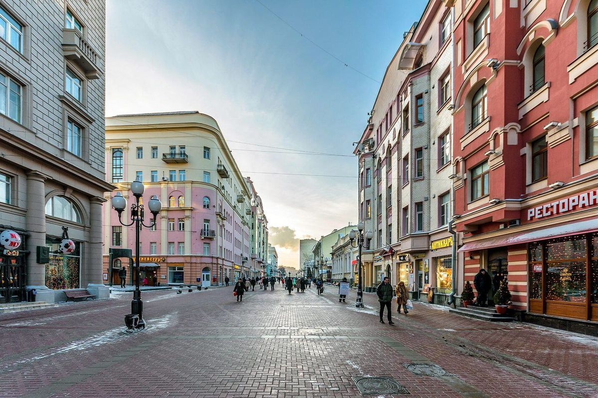

День 05 · вторник, 10 ноября
Новый адрес
Смена отеля — тоже часть путешествия, только с чемоданами. Дальше я убегаю на работу.

- Гостиница
- AZIMUT Смоленская
- Выселяемся из Сафмар Аврора Люкс (до 12:00) — без паники, вещи поедут в одной машине
- Заселяю тебя в AZIMUT Смоленская, Смоленская, 8 — дальше ты здесь дома
- Убегаю на работу. Центр в твоём распоряжении: Арбат, Смоленская, Киевский вокзал
Вечер без меня
Вечер в новом отеле — твой: ужин можно и не искать, внизу четыре ресторана
Если освобожусь раньше — напишу, и встретимся
Про переезд
- Обе гостиницы выбраны так, чтобы чемодан не пришлось таскать по городу: от Петровки до Смоленской — пятнадцать минут на машине.
- День, к сожалению, у меня рабочий. Тебе не нужно ничего придумывать: в отеле есть «Брюссель», «Сахалин», рамен-бар и сибирская кухня.